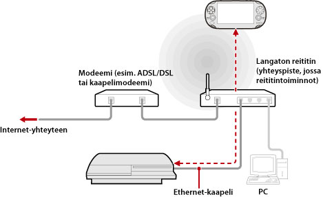

Verkko > Etäkäyttö (tukiaseman kautta)
Etäkäyttö (tukiaseman kautta)
Yhdistä PS3™-järjestelmä tukiasemaan Ethernet-kaapelilla. Käytä langatonta verkkotoimintoa etäkäyttöä tukevasta laitteesta, kuten PS Vita -järjestelmästä tai PSP™-järjestelmästä, muodostaaksesi yhteyden PS3™-järjestelmään tukiaseman kautta.
Kokoonpanoesimerkki

Vihjeitä
- Langaton reititin on eräänlainen tukiasema. Tukiasema taas on laite, jonka avulla voi muodostaa langattoman yhteyden verkkoon. Reititin on laite, jonka avulla monta eri laitetta voi käyttää samaa Internet-yhteyttä.
- Modeemissa saattaa olla reititintoiminto. Kytke PS3™-järjestelmä laitteeseen, jossa on reititintoiminto.
- Jos sekä tukiasema että modeemi on varustettu reititintoiminnolla, poista jommankumman laitteen reititintoiminto käytöstä. PS3™-järjestelmän ja etäkäyttöä tukevan laitteen on oltava samassa verkossa. Jos samanaikaisesti käytössä on enemmän kuin yksi reititin, PS3™-järjestelmä ja laite voivat olla eri verkoissa, jolloin etäkäyttöä ei voi käyttää.
Esivalmistelut (PS3™-järjestelmä ja etäkäyttöä tukeva laite)
Kun käytät etäkäyttöä ensimmäisen kerran, rekisteröi (yhdistä) etäkäyttöä tukeva laite, esimerkiksi PS Vita -järjestelmä-järjestelmä tai PSP™-järjestelmä, PS3™-järjestelmään. Kun haluat rekisteröidä (yhdistää) laitteen, valitse  (Asetukset) >
(Asetukset) >  (Etäkäyttöasetukset) > [Rekisteröi laite].
(Etäkäyttöasetukset) > [Rekisteröi laite].
Esivalmistelut (etäkäyttöä tukeva laite)
Muodosta verkkoyhteys, jotta voit liittää laitteen tukiasemaan. Jos laitteessa on jo tallennettu verkkoyhteys, sinun ei tarvitse luoda uutta. Lisätietoja verkkoyhteyden muodostamisesta on laitteen käyttöoppaassa.
Etäkäytön käyttäminen PS Vita -järjestelmässä
1. |
Valitse PS Vita -järjestelmästä |
|---|
 (PS3-etäkäyttö) > [Aloitus].
(PS3-etäkäyttö) > [Aloitus].2. |
Valitse PS3™-järjestelmässä |
|---|
 (Verkko) >
(Verkko) >  (Etäkäyttö).
(Etäkäyttö). 3. |
Napauta PS Vita -järjestelmässä [Muodosta yhteys yksityisverkon kautta]. |
|---|
Etäkäytön käyttäminen PSP™-järjestelmässä
1. |
Valitse PS3™-järjestelmässä |
|---|---|
2. |
Valitse PSP™-järjestelmässä |
3. |
Valitse [Connect via Private Network]. |
4. |
Valitse yhteysluettelosta sen tukiaseman yhteys, jota käytetään etäkäytössä. |
 (Remote Play).
(Remote Play).Vihjeitä
- Etäkäyttö on mahdollista tukiaseman signaalin kantavuusalueella.
- Jos otat PS3™-järjestelmän etäkäynnistyksen käyttöön, voit määrittää laitteen virran kytkettäväksi päälle automaattisesti (Wake on LAN). Lisätietoja on tämän oppaan kohdassa (Asetukset) > (Etäkäyttöasetukset) > [Etäkäynnistys].
- Jos siirryt etäkäytön aikana toisen sovelluksen näyttöön, etäkäyttöyhteys suljetaan 30 sekunnin kuluttua.